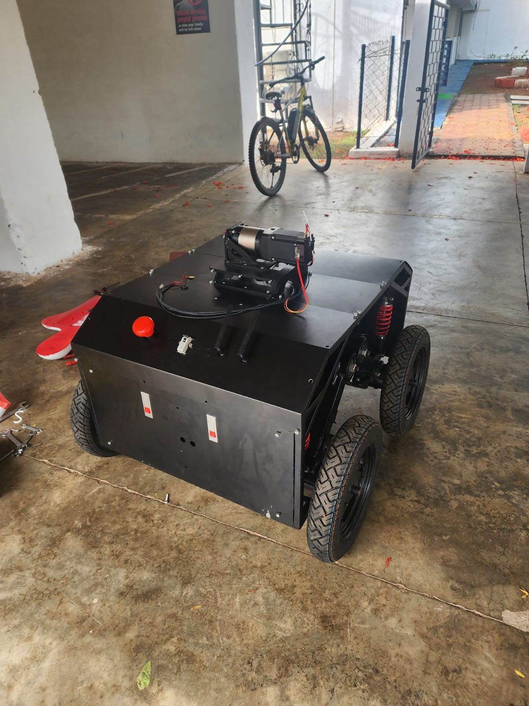
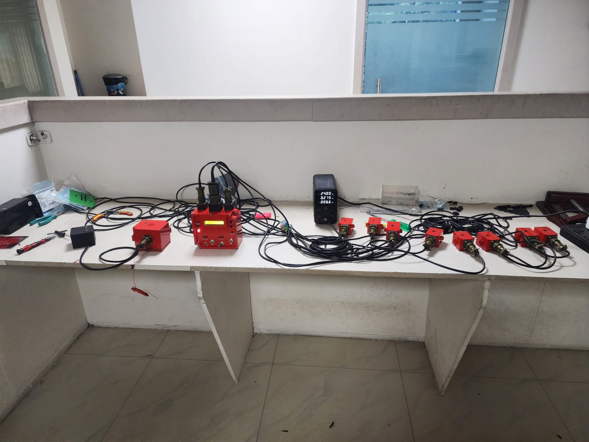
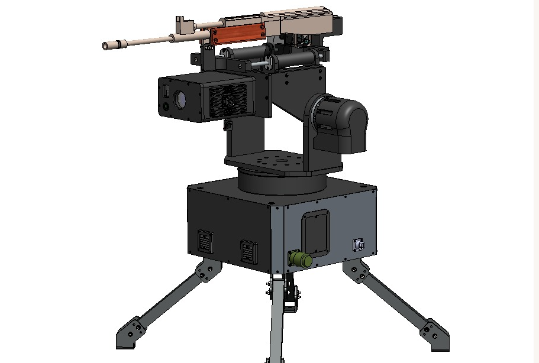
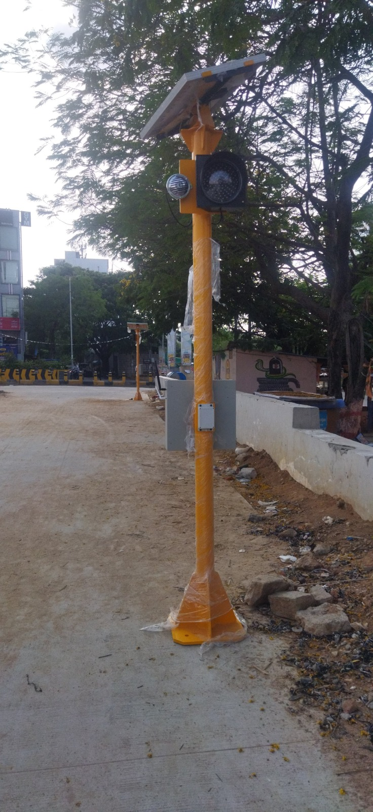
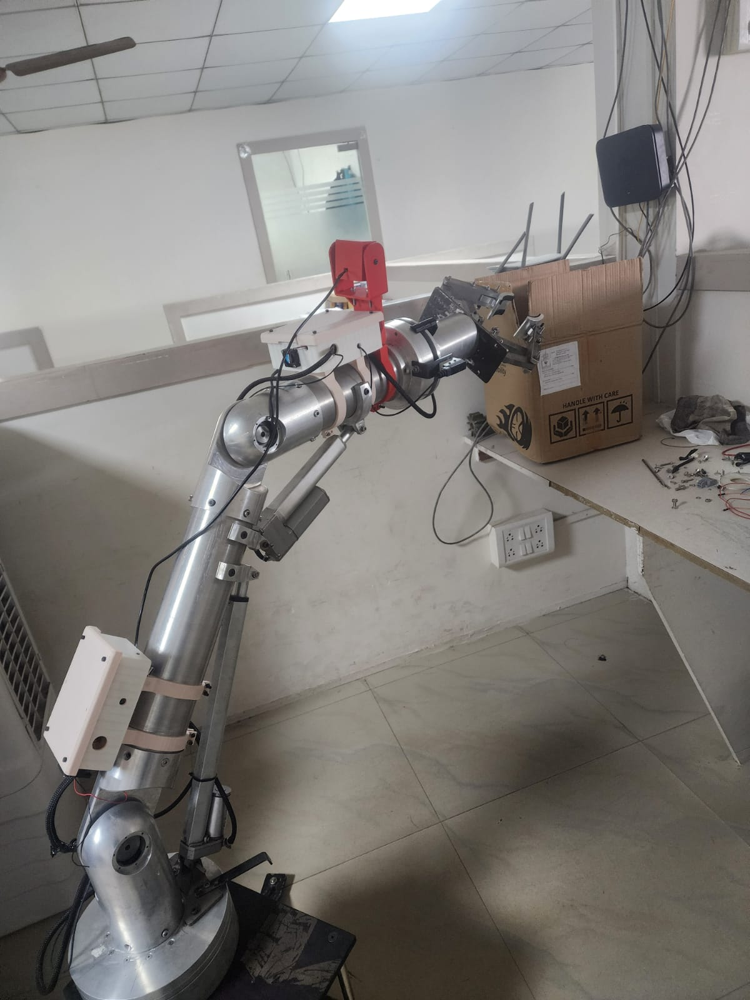
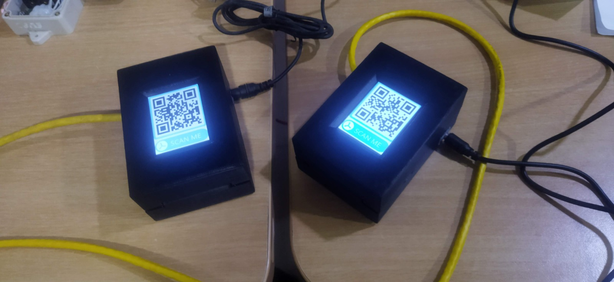
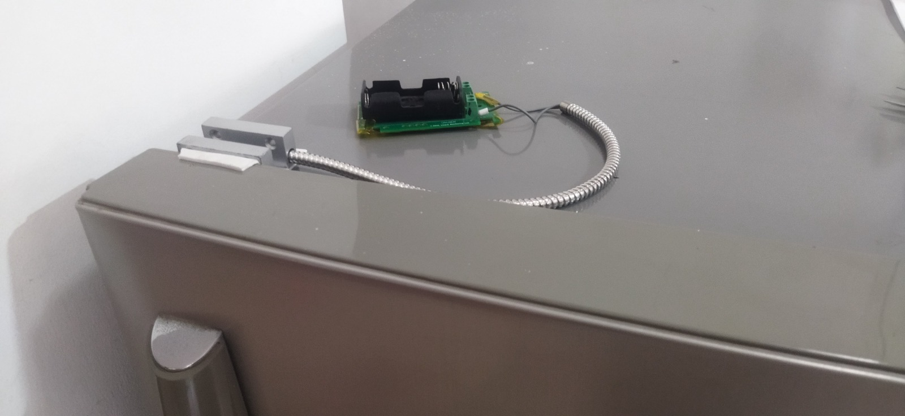
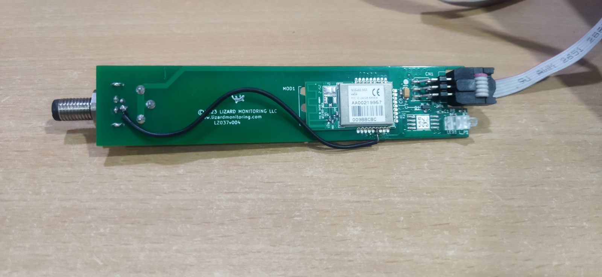

Embedded Systems Engineer with 3.6+ years of experience in defence robotics, industrial automation, and IoT. Specialized in embedded firmware development, hardware-software integration, and real-time systems for safety-critical applications. Proficient in sensor interfacing, communication protocols, RTOS-based development, and field-deployable autonomous systems.
Embedded firmware developer delivering defence robotics, industrial automation, and IoT systems.
I am Vijay Kumar Sriparthi, an Embedded Systems Engineer with 3.6+ years of experience in defence robotics, industrial automation, and IoT. I specialize in embedded firmware development, hardware-software integration, real-time systems, and safety-critical design.
I have led and delivered embedded systems for autonomous robotics, weapon platforms, and fire detection systems. My work focuses on sensor interfacing, communication protocols, fail-safe firmware, and RTOS-based deployment for field-ready solutions. I enjoy solving complex hardware-software challenges and building systems that perform reliably in demanding environments.
The languages, tools, and technologies I work with to build robust and scalable solutions.
Professional roles and academic achievements that shaped my embedded systems career.
VIR Innovations
Leading embedded firmware development for defence and industrial automation platforms. Designing MCU-based control systems, sensor interfaces, and robust communication stacks for field-ready products. Driving hardware-software integration and reliability testing across real-time embedded systems.
Geekbull Consulting — Autonomous Agriculture Robot
Served as Embedded & Electrical Engineer for an autonomous agriculture robotics project. Developed motor control firmware, sensor fusion, and power management systems for field deployment. Collaborated on electrical design, PCB validation, and integration of navigation and telemetry modules.
Seshadrirao Gudlavalleru Engineering College (JNTUK)
Completed B.Tech with a strong focus on embedded systems, control systems, and power electronics. Gained hands-on experience in firmware development, microcontroller programming, and hardware integration. Achieved a CGPA of 7.77 while building defence robotics and automation projects.
AANM & VVRSR Polytechnic College, Gudlavalleru
Developed a solid foundation in electrical systems, circuit design, and automation. Completed the diploma with an 83% score, preparing for further specialization in embedded systems.
VECTOR India · Sai Electronics Works
Completed Embedded Systems Training at VECTOR India, Hyderabad, and an industrial internship at Sai Electronics Works, Nuzividu. Focused on embedded firmware, hardware debugging, and system-level integration for defence and IoT applications.
Selected embedded systems and defence robotics projects showcasing firmware, sensor integration, and autonomous systems.

Defence Robotics • Autonomous Systems
Led embedded development for an autonomous mannequin navigation platform used in military simulation. Integrated SLAM navigation with LiDAR, GPS, and IMU sensors for terrain-aware path tracking. Built synchronized motion control, obstacle avoidance, real-time telemetry, and fail-safe override systems.

Embedded Firmware • Defence Systems
Developed firmware for BMP armoured tank fire detection and suppression using MLX90640 and SFA203A IR sensors. Implemented relay-controlled engine shutdown, modular PCB design, and ISR-driven sensor fusion for rapid detection. Delivered a rugged, fail-safe system validated for extreme military operating conditions.

Firmware • Weapon Stabilization
Built embedded control systems for remote LMG and MMG weapon mounts on military vehicles. Developed stabilization and servo control routines for precise aiming with minimal recoil impact. Integrated video-assisted targeting, rugged control electronics, and battlefield-grade firmware validation.

IoT • Safety Systems
Designed a Doppler radar-based vehicle detection and warning system for dangerous hilly curves. Implemented approach detection with automatic audio-visual siren alerts. Engineered dual-mode solar + 230V AC power unit with relay-based switching for autonomous operation.

Autonomous Systems • Agriculture
Designed autonomous robot for planting, weeding, spraying, and crop health monitoring on farms. Integrated GPS, LiDAR, soil moisture, and ultrasonic sensors on ESP32/Jetson Nano platform. Programmed motion planning and obstacle avoidance in Python/C++ using ROS2, achieving 80% labor reduction.

Security • IoT
Designed and deployed a secure QR code authentication system using ESP32 and MQTT protocol. Implemented encrypted communication, relay-based door lock control, and anti-tailgating mechanisms. Delivered a robust access management solution for facility security.

IoT • Low-Power Wireless
Built IoT system for door event detection using interrupt logic on JN5164 with Jennet IP protocol. Implemented state machine architecture with EEPROM-buffered timestamped logs and circular buffer design. Delivered a low-power wireless monitoring solution for remote asset tracking.

IoT • Environmental Monitoring
Built field-deployable IoT data logger capturing environmental telemetry (temperature, humidity, pressure) with GPS tagging. Published structured JSON payloads over MQTT to cloud broker for real-time remote monitoring. Optimized firmware for low-power continuous operation suitable for industrial and outdoor deployments.
Available for embedded systems, defence robotics, and industrial automation opportunities.
Phone
Location
Hyderabad, Telangana